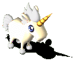
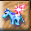
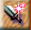
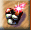
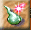
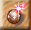

 幻獸分成金、木、水、火、土、光、闇七種屬性。不同屬性間有相剋關係，對於相剋屬性目標的攻擊力會減半，遭到相剋屬性敵人攻擊時，損害也會增加50%。相剋關係為： 金剋木、木剋土、土剋水、水剋火、火剋金，光、闇互相剋。 除了屬性不同的差異外，不同種類的幻獸的體質、力量、敏捷等數值也會有所不同，並且還可以學會不同的技能。 雖然幻獸對主人有非常多的幫助，不過，陪養幻獸和結合幻獸的各種型態，都會不斷消耗主人的魔法力。如果法力不足以供應幻獸所需，幻獸就會被迫解除幻化，回到一般狀態，如果連一般狀態都負擔不起，主人和幻獸之間的親和度就會直線下降，最後導致幻獸逃走。
除了新手任務可以取得一顆「幻獸蛋」（得到幻獸）外，玩家還可以用封印石（可從任務中取得或在寵物商店中購買），於戰鬥中捕抓幻獸。在「童話」中，除了頭目級的敵人之外，所有在野外遇到的幻獸玩家都有機會抓到。只要將其他敵人都消滅掉，只留下想要抓的幻獸在戰場上，並將牠的生命力降低到一定的比例以下，就可以嘗試著用封印石將牠捕捉起來。不過，此時的幻獸因為生命力降低，很有可能會逃離戰場。 除了親自捕捉之外，還可以用交易的方式，向其他玩家購買他們的幻獸。但新手任務取得的幻獸，會因為認主的關係無法出售。
幻獸的最主要功能，是在戰鬥中以各種幻化狀態，協助主人獲得勝利。不過，玩家取得新的幻獸後，首先應該提高和該幻獸之間的親和度，否則不但幻獸的功能會受到限制，而且還可能在戰鬥中不聽指揮，甚至目露兇光地反過來攻擊玩家。 和幻獸間的親和度，除了受到主人魅力的影響外，提高親和度的方法有兩種，一是放牠們出來散步，只要玩家不要離開幻獸所在的畫面，就可以隨時間逐漸提高親和度（最高可達70）。但是如果玩家離開幻獸所在畫面，親和度反而會快速下降！ 另外一種增加幻獸親和度的方法，就是和幻獸一起參加戰鬥，只要在獲勝時幻獸還在戰場上，就會增加與主人間的親和度。 |
| 幻獸功能 |

獸化
讓幻獸平時跟在玩家身後，戰鬥時以原始型態攻擊敵人。 
武化 讓幻獸幻化成武器的一部份，以加強武器攻擊力，並改變武器的攻擊屬性。例如：火系幻獸武化後，會讓武器的攻擊屬性變成火系。親和度30以上才可以進行。 
鎧化 讓幻獸幻化成護甲的一部份，以加強護甲防禦力，並改變護甲的防禦屬性。例如：水系幻獸鎧化後，會讓護甲的防禦屬性變成水系。親和度50以上才可以進行。 
法化 讓幻獸縮成一顆法力增幅器，可以提高施展魔法的效果。親和度60以上才可以進行。 
靈化 讓幻獸變成主人的護身光團，可以提高玩家對於敵人魔法的防禦力。也能加快主人從外界吸收魔法元素的效率，不過親和度要80以上才可以進行，而且主人每施展一次，就要好一段時間之後才能再度進行這樣的結合。 以上資料完全取自於童話官方網站